在現代這種 AI 革命的時代，透過 LLM 就能進行程式碼的生成，這讓編寫系統變得比過去更加容易，因此系統架構的設計就成了可以更加有心力關注的主題。我們也不能只是完全依賴 AI 所生成的程式進行系統的建立，更關鍵的是要真正理解並設計適合目標問題與場景的系統架構，如此一來才能更加發揮 AI 程式碼生成的能力，從而達到比過去更加快速、精準、完善的系統建立流程。
在系統架構中，隨著用戶規模的增長與業務複雜度的提升，單一伺服器已無法應對大量請求的挑戰。因此系統架構不斷演進，從單機走向分布式、從集中走向微服務，每一次演進都是為了解決當下的瓶頸。
接下來就嘗試一步步拆解系統建立可能會面臨到的問題，並從中找出適合的解決方法。
💡 以下是系統架構常見到的專業用語：
- 分布式：指系統中的多個模組、服務、資料庫、或功能節點部署在不同的伺服器（甚至不同地區）上彼此協作。
- 集群：一個特定領域的軟體部署在多台伺服器上並作為一個整體提供一類服務，則可被稱作集群。在常見的集群中，客戶端通常能夠連接任意一個節點獲得服務，並且在當集群中一個節點掉線時，其他節點能夠自動替它繼續提供服務。
- 負載平衡：請求發送到系統時，通過某些方式把請求均勻分發到多個節點上，使系統中每個節點能夠均勻的處理請求負載。
- 正向代理和反向代理：系統內部要存取外部網路時，統一透過一個代理伺服器把請求轉發出去，在外部網路的視角下，這些請求都是該代理伺服器所發起的，則稱其為正向代理（代理伺服器正向代理）；當外部請求進入系統時，代理伺服器把該請求轉發到系統的某台伺服器上，對外部請求來說，與之交互的是該代理伺服器，則稱其為反向代理（代理伺服器反向代理）。
系統架構進程
單機架構（Single Machine）
基礎的單機架構，一個應用伺服器一個資料庫。
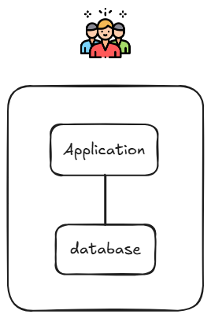
如果使用者變多了，導致應用與資料庫之間常常競爭搶資源？
多機架構 - 拆分應用與資料庫
為了解決資源競爭問題，透過拆分應用與資料庫至不同伺服器中。
- 應用伺服器處理請求與相關邏輯
- 資料庫伺服器處理與儲存資料
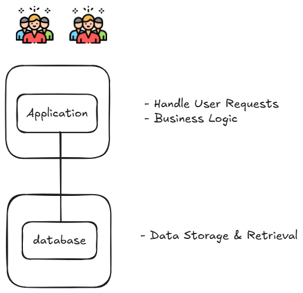
如果使用者再變更多了，導致應用與資料庫無法負荷如此大量的查詢呢？
高併發設計架構 - 水平擴展
為了解決單台伺服器無法負荷大量請求的問題，透過部署多台應用伺服器組成集群，並引入負載平衡器（Load Balancer）將請求均勻分發到各台伺服器中。
- 負載平衡器（Load Balancer）是一種位於使用者與伺服器之間的裝置或服務，負責將網路流量分配到多台伺服器上。當使用者發出請求時，請求會先抵達負載平衡器，接著負載平衡器會依據特定的演算法，將流量導向健康的後端伺服器。若某台伺服器故障，它會自動將流量轉移至其他正常的伺服器。
- 即便其中一台出問題，其他的也可以幫忙分擔請求
負載平衡常見的分配演算法包括：
- 輪詢（Round Robin）：依序將請求分配給每台伺服器
- 加權輪詢（Weighted Round Robin）：依伺服器效能配置不同權重
- 最少連線（Least Connections）：優先分配給當前連線數最少的伺服器
- IP Hash：依用戶 IP 固定路由到同一台伺服器，可解決 Session 問題
常見工具：Nginx、HAProxy（Layer 7）
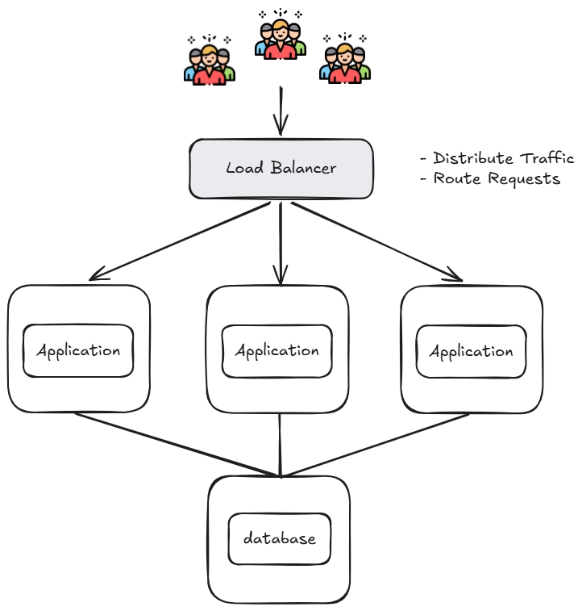
水平擴展讓應用層可支撐更多並發，但大量請求最終仍會打到同一個資料庫，資料庫的讀取壓力成為新的系統瓶頸。
引入本地與分布式緩存
在多台應用伺服器上各自部署本地緩存（Local Cache），並在外部建置共享的分布式緩存（Distributed Cache, Redis），讓大多數請求能在緩存層被攔截，避免直接打到資料庫。
- 本地緩存：每台 Application Server 各自維護，存取速度最快，但各節點間資料可能不一致
- 分布式緩存（Redis）：所有節點共享，解決一致性問題，也能在 Application 重啟後保留緩存資料
- 資料庫前也加一層緩存，進一步降低資料庫直接被存取的壓力
需注意的常見問題：
- 緩存穿透：查詢不存在的資料，每次都打到資料庫
- 緩存擊穿：熱點 Key 過期瞬間，大量請求同時湧入資料庫
- 緩存雪崩：大量 Key 同時過期，導致資料庫瞬間壓力爆增
- 緩存一致性：資料更新時如何保持緩存與資料庫的同步
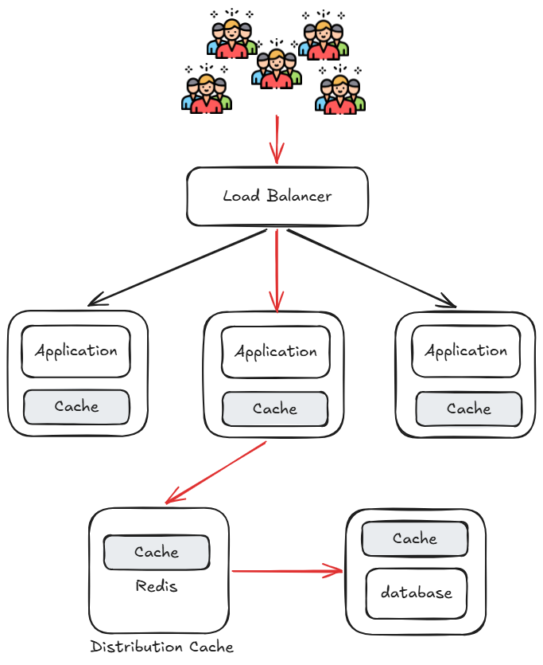
緩存雖然大幅降低了資料庫壓力，但寫入操作仍然全數打向單一資料庫，讀寫混雜使資料庫成為下一個瓶頸。
資料庫讀寫分離
將資料庫拆分為 Master（寫庫） 與 Slave（讀庫），所有寫入操作導向 Master，讀取操作則導向 Slave，讀庫可以有多個以分擔讀取壓力。
- Master：負責處理所有寫入（Write）請求，並透過同步機制將資料複製到 Slave
- Slave：負責處理所有讀取（Read）請求，可水平擴展增加多個節點
- Distribution Cache（Redis）：對於需要即時讀取剛寫入資料的場景，透過在緩存中多寫一份來解決主從同步延遲問題
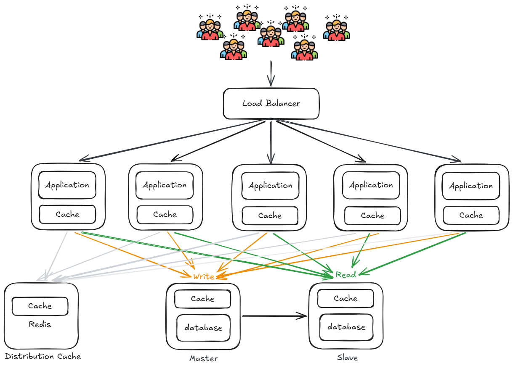
隨著業務增加，不同業務之間存取量差距大，且彼此競爭資料庫資源，相互影響效能。
資料庫按業務分庫（Vertical Sharding）
將不同業務的資料拆分到各自獨立的資料庫中，透過 Database Proxy 統一接收應用層的請求，再路由到對應的業務資料庫，降低業務間的資源競爭。
- Database Proxy：作為應用與資料庫之間的代理層，負責 SQL 路由、讀寫分離，應用不需感知底層資料庫的分佈
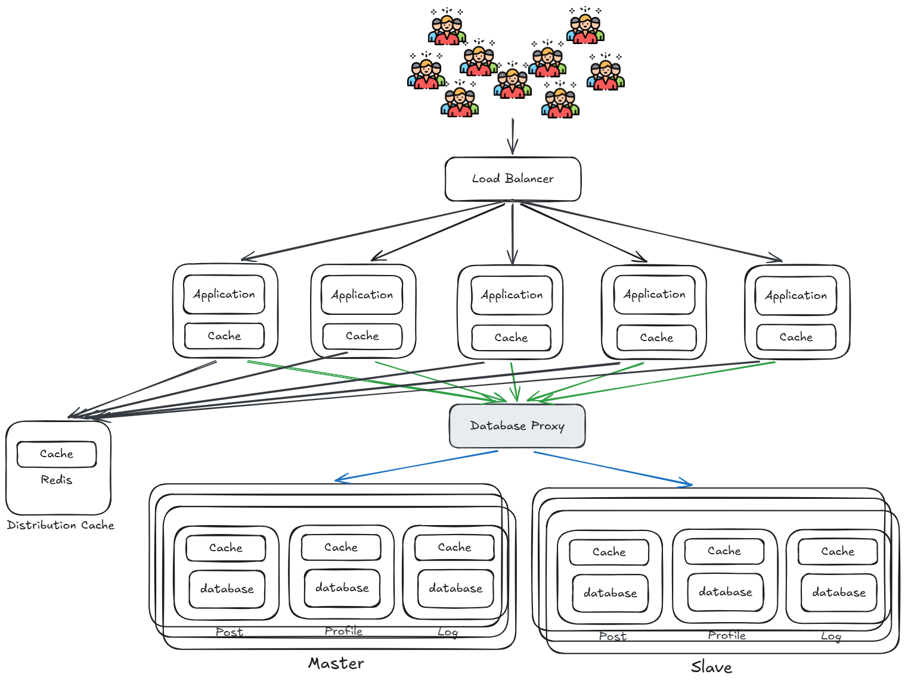
隨著用戶數量與地理分布越來越廣，靜態資源（圖片、CSS、JS、影片等）每次都需從源站伺服器取得，導致：
- 距離遠的用戶存取延遲高
- 大量靜態資源請求佔用應用伺服器與頻寬資源
- 源站在流量高峰時壓力過大
- 源站 IP 直接暴露，容易遭受 DDoS 攻擊、惡意爬蟲、流量劫持等安全威脅
內容傳遞網路（Content Delivery Network, CDN）
在不同地區部署多個 CDN 節點，用戶請求會被導向地理位置最近的 CDN 節點，由 CDN 直接回應靜態資源，大幅減少源站壓力與用戶存取延遲。
- CDN 節點：分布於各地區的邊緣伺服器，快取靜態資源（圖片、CSS、JS、影片等），讓用戶就近取得內容
- 回源機制：CDN 快取未命中時，才向後端 Load Balancer 請求，並將結果快取供後續使用
- 隱藏源站 IP：用戶只與 CDN 節點互動，源站 IP 不對外暴露，有效防禦 DDoS 攻擊、流量劫持等安全威脅
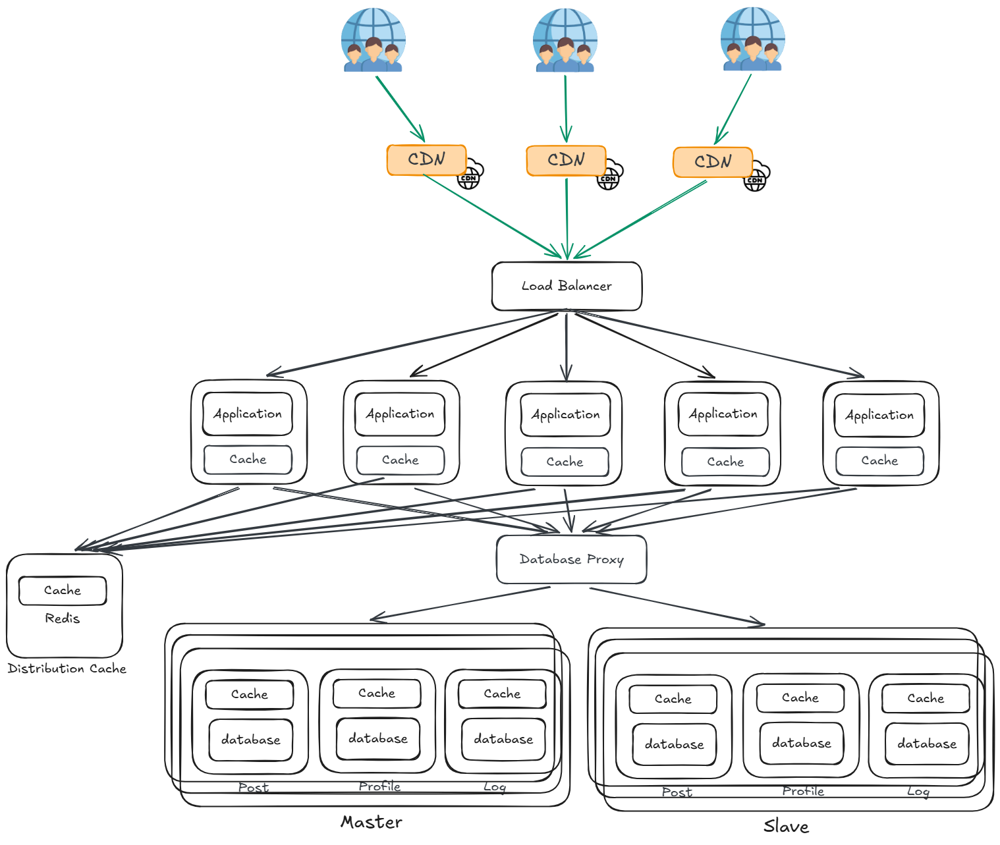
靜態資源的延遲與安全問題解決了，但隨著流量持續增長，應用伺服器直接面對所有動態請求，單一入口缺乏統一的流量管控與協定處理能力。
反向代理（Reverse Proxy）
在用戶請求進入應用伺服器之前，加入一層 Reverse Proxy 統一處理所有進入的流量，再分發到後端的應用伺服器叢集。
- Load Balancing：將請求均勻分發到多台 Application Server，避免單台過載
- Request Routing：依路徑或規則將請求導向對應的服務或伺服器
- SSL Termination：統一在此層處理 HTTPS 加解密，減輕後端應用伺服器的負擔
- Caching：快取部分回應內容，減少重複請求打到應用層
- Compression：對回應進行 Gzip 壓縮，降低網路傳輸量
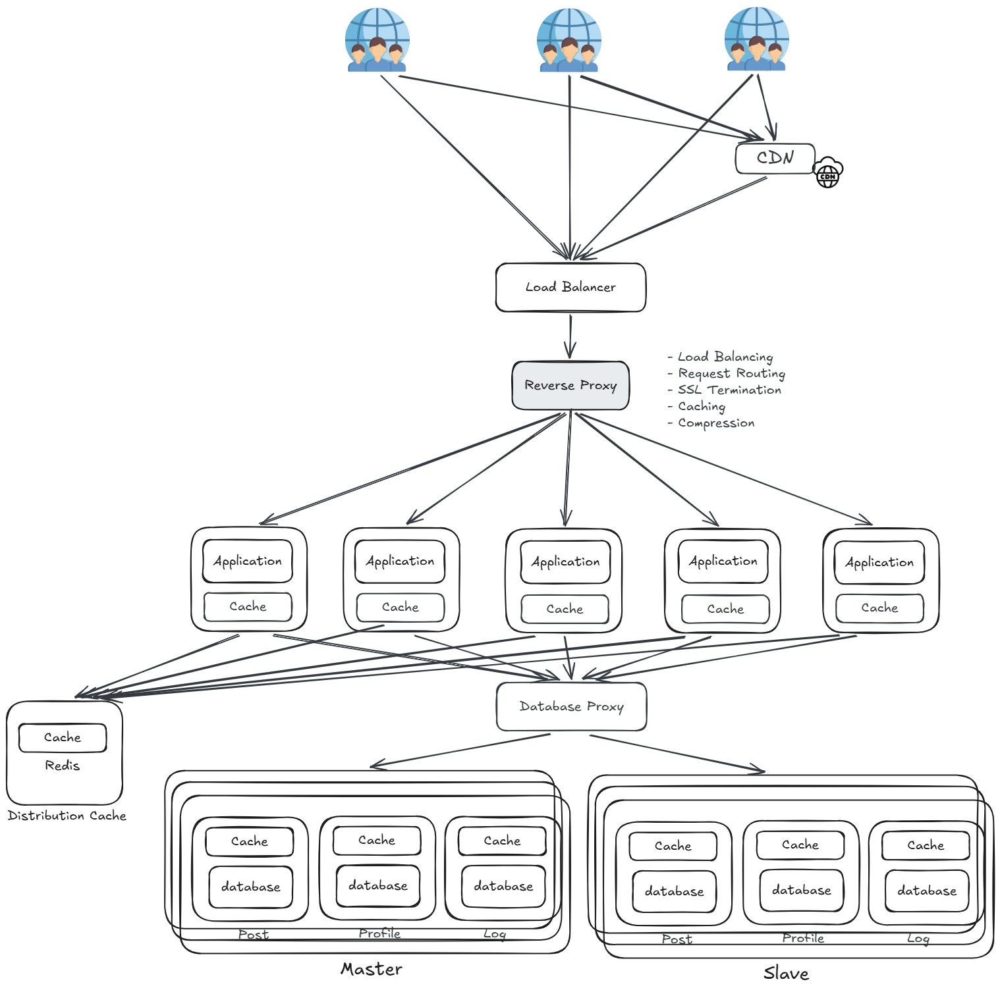
隨著業務持續擴張，需要解決的查詢場景越來越複雜，傳統關聯式資料庫已無法負荷，例如：模糊查詢、全文搜尋、多維統計分析等問題。
NoSQL / 搜尋引擎
針對傳統關聯式資料庫無法有效處理的場景，引入專門的技術方案，讓不同類型的查詢需求都能交由最適合的系統處理。
- Search Engine（ElasticSearch）：處理全文搜尋、模糊查詢等非結構化文字搜尋需求，應用層直接查詢 ElasticSearch，不再打到傳統資料庫
- NoSQL（MongoDB）：處理彈性資料結構、多維統計分析等場景，適合文件型、非結構化的資料儲存
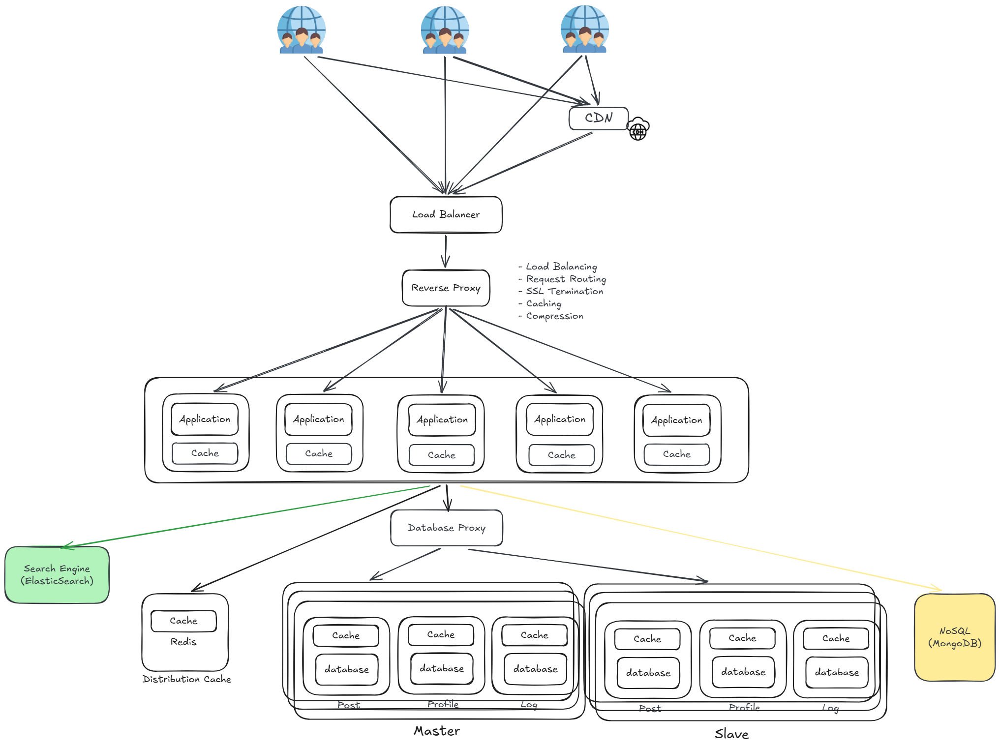
隨著功能持續迭代，所有業務邏輯都集中在同一個單體應用（Monolith）中，導致：
- 任何一個小改動都需要整個應用重新部署，部署風險高
- 不同團隊修改同一份程式碼，容易互相衝突、難以並行開發
- 單一功能出問題，整個應用都會受到影響，無法隔離故障
- 難以針對特定業務獨立擴展，只能整體垂直擴充
分布式架構（Distributed Architecture）
將單體應用按業務拆分成多個獨立的應用服務，每個服務各自組成 Cluster 獨立部署，不同 Cluster 可由不同團隊負責開發與維護，互不干擾。
- Cluster1（App1）：負責特定業務的應用叢集，多個節點共同提供服務，單節點故障不影響整體
- Cluster2（App2）：另一個獨立業務的應用叢集，可依各自業務流量獨立水平擴展
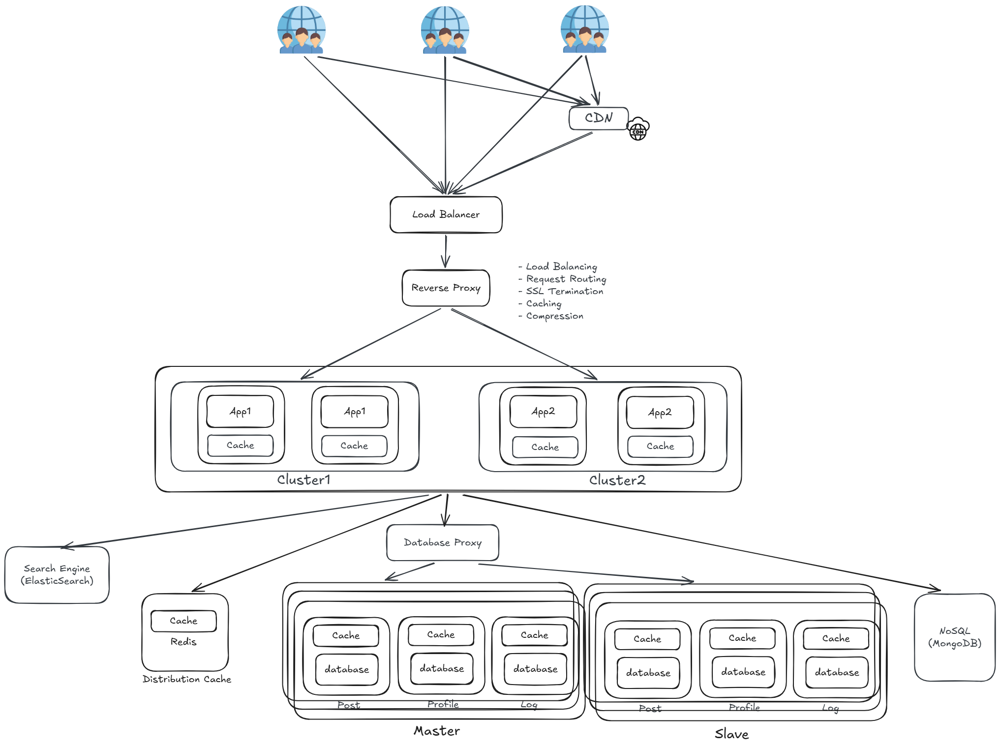
各服務拆分成獨立 Cluster 後，服務之間需要互相呼叫，但直接使用 HTTP 存在以下問題：
- 呼叫方需要知道對方的 IP 與 Port，服務一多難以管理
- 服務節點動態增減時，呼叫方無法即時感知
- 缺乏統一的服務發現機制，服務間依賴關係混亂
引入 RPC 與服務註冊發現（RPC & Service Register / Discovery）
各 Cluster 之間透過 RPC（Remote Procedure Call） 互相呼叫，並引入 Service Register & Discovery Center 統一管理所有服務的位置，讓服務間的呼叫不再需要硬編碼 IP。
RPC（Remote Procedure Call）
- 讓服務之間可以像呼叫本地函式一樣呼叫遠端服務，屏蔽底層網路通訊細節
- 比 HTTP 更輕量、效能更高，適合服務間的內部通訊
- 常見框架：gRPC、Dubbo、Thrift
Service Register & Discovery Center
- 每個 Cluster 啟動時向 Discovery Center 註冊自己的位置（IP、Port）
- 呼叫方透過 Discovery Center 查詢目標服務的位置，再發起 RPC 呼叫
- 服務節點新增或下線時，Discovery Center 自動更新，呼叫方無需手動維護
- 常見工具：Zookeeper、Consul、Nacos、Eureka
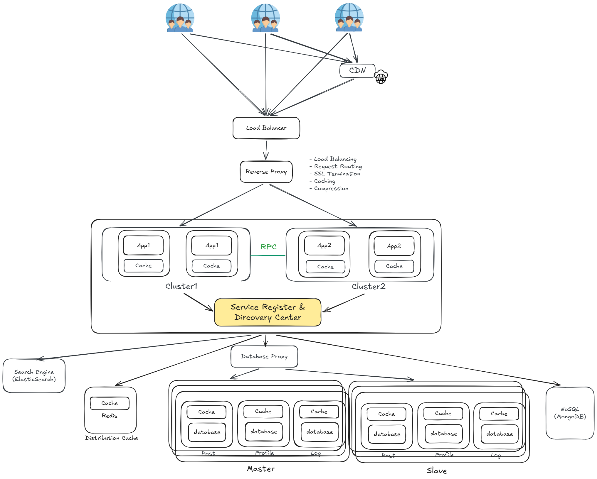
服務間直接透過 RPC 同步呼叫，當呼叫鏈過長或下游服務處理緩慢時，會造成：
- 上游服務被阻塞：需等待下游回應才能繼續，響應時間拉長
- 流量洪峰：突發大量請求直接打向下游服務，容易造成服務崩潰
- 強耦合：上游服務必須知道下游服務的存在，任一方異常都會互相影響
引入消息佇列（Message Queue）
在 Cluster 之間加入 Message Queue 作為非同步通訊的中介層，讓服務之間不再需要直接同步呼叫，上游發完消息即可繼續處理下一個請求，由下游服務自行消費。
- 非同步（Async）：上游發送消息後不需等待下游回應，大幅降低響應時間
- 削峰填谷（Peak Shaving）：流量洪峰時消息暫存於佇列，下游依自身處理能力逐步消費，避免服務崩潰
- 解耦（Decoupling）：上游不需知道下游服務的存在，雙方透過消息格式約定溝通，互不依賴
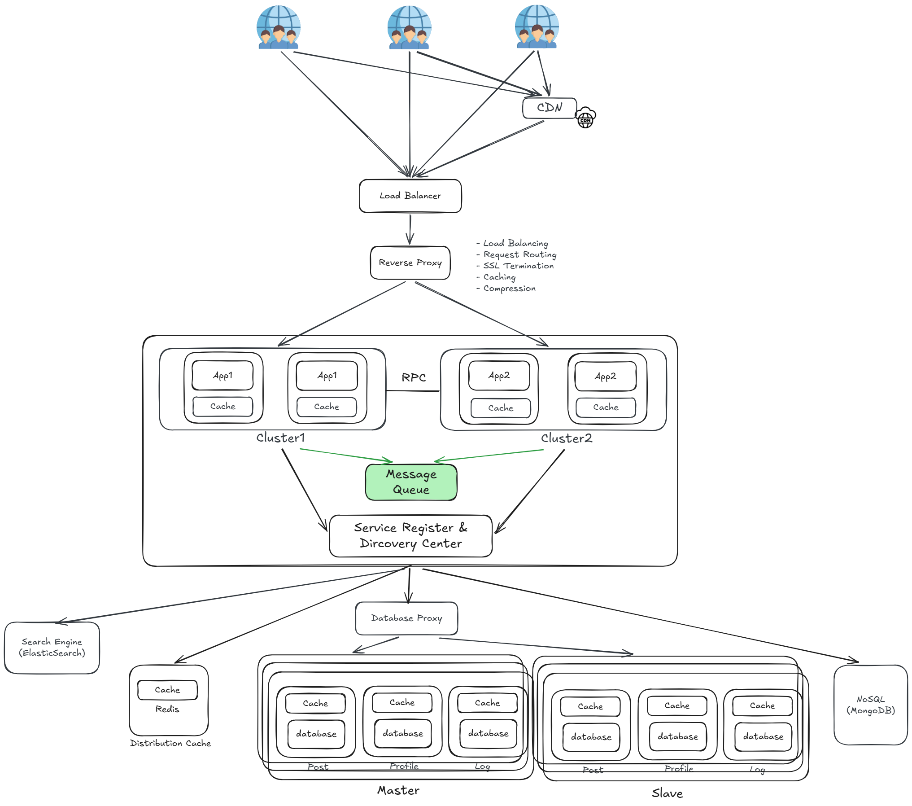
隨著服務數量持續增加，部署與維運面臨嚴峻挑戰：
- 每個服務都需要手動準備運行環境，環境設定不一致容易出錯
- 服務更新時需要逐台伺服器部署，耗時且風險高
- 流量高峰時難以快速水平擴展特定服務
- 服務崩潰時缺乏自動恢復機制
微服務架構
將應用進一步拆分成多個更小、更專一的微服務，每個服務各自獨立部署、獨立擴展，整體構成一個 Micro Service 層。
- 各服務獨立部署，單一服務更新不影響其他服務
- 故障隔離，單一服務崩潰不會拖垮整體系統
- 各服務可依需求選擇最適合的技術棧
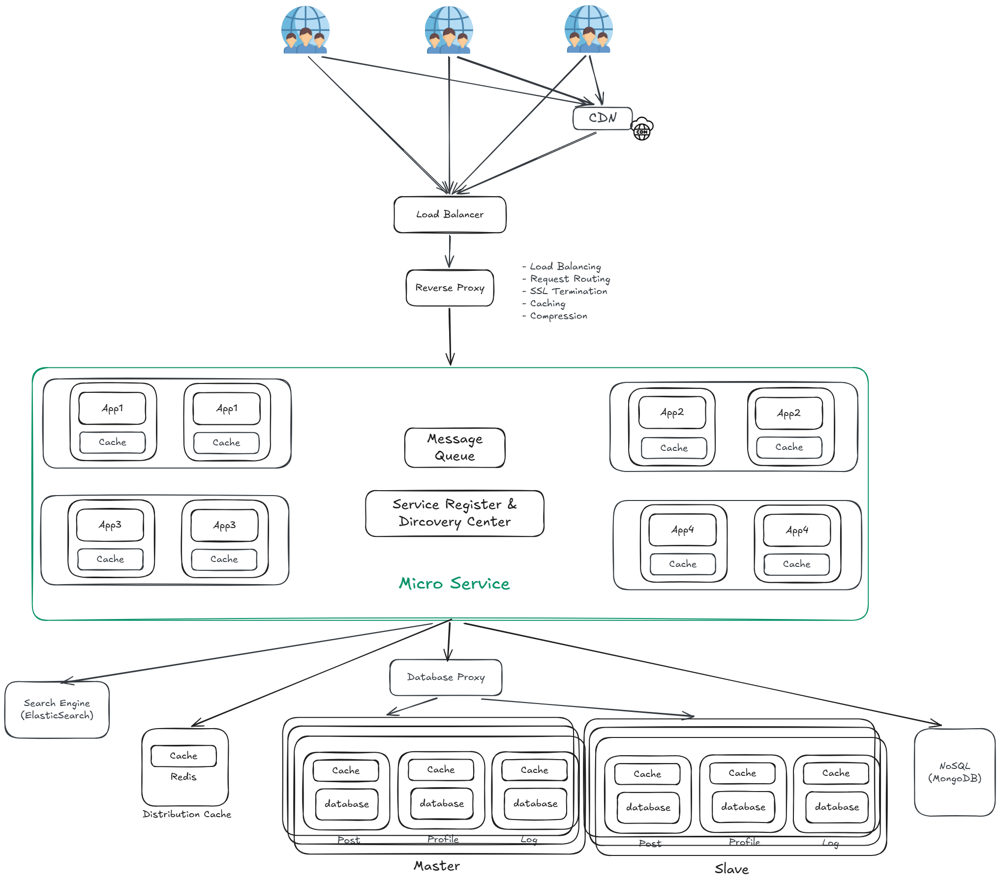
微服務數量龐大，每個服務都需要獨立管理運行環境，導致：
- 不同服務的環境設定不一致，「在我機器上可以跑」的問題頻繁出現
- 服務部署需要人工逐台安裝環境、啟動服務，耗時且容易出錯
- 流量高峰時無法快速自動擴展，尖峰過後大量機器閒置，資源利用率低
- 硬體機器需要公司自行採購與維護，固定成本高
容器化
將每個微服務打包成 Docker Image，包含服務程式碼（Service Program）、設定（Config.）、依賴（Depn.）與運行環境（Environment），確保在任何機器上都能一致地運行。
Docker
- Service Program：服務本身的程式碼
- Config.：服務的設定檔
- Depn.（Dependencies）：服務所需的套件與函式庫
- Environment：運行環境（JDK、Node.js 等），打包進 Image 後環境完全一致
Docker Engine
- 每台機器上運行 Docker Engine，負責啟動與管理 Container
- 多個 Container 運行在同一台機器上，共享 OS 資源但互相隔離
- Container1 / Container2 / Container3 / Container4 各自對應不同的微服務
Kubernetes（K8S）
- 自動調度：將容器自動分配到最適合的節點上運行
- Auto Scaling：依流量自動水平擴展或縮減容器數量
- Self Healing：容器崩潰時自動重啟，節點故障時自動遷移
- Rolling Update：服務更新時滾動部署，零停機上線
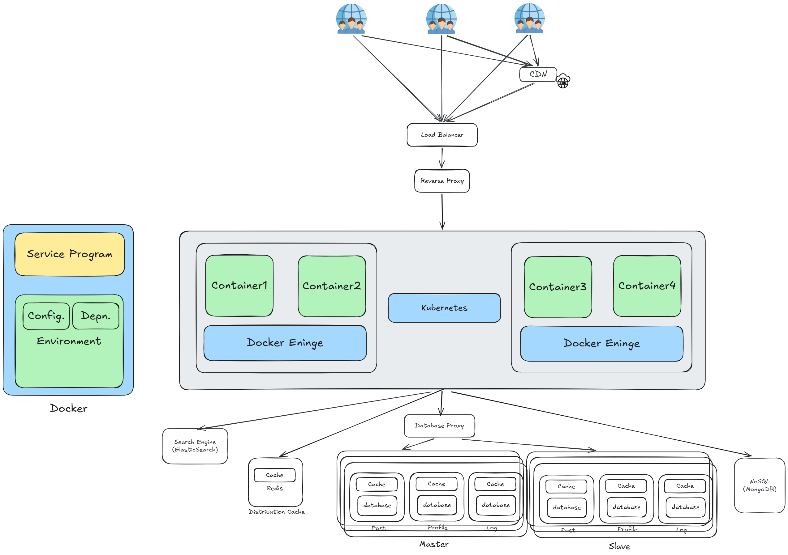
容器數量龐大，手動管理調度已不可行：
- 容器崩潰時需要人工介入重啟
- 流量高峰時無法自動擴展容器數量
- 大量容器分散在多台機器上，難以統一監控與管理
- 硬體機器仍需公司自行採購與維護，非尖峰時期資源大量閒置，成本高
雲端平台（Cloud Platform）
將整個系統部署至雲端，透過雲端提供的基礎設施與服務，解決容器調度、自動擴縮容、硬體維護等問題。
| 層級 | 全名 | 說明 |
|---|---|---|
| IaaS | Infrastructure as a Service | 動態申請運算、儲存、網路等硬體資源，按用量付費 |
| PaaS | Platform as a Service | 提供現成的資料庫、緩存、消息佇列等技術組件 |
| SaaS | Software as a Service | 提供完整的應用服務，直接訂閱使用 |
雲端帶來的優勢：
- 硬體資源按需申請，非尖峰時期自動釋放，大幅降低成本
- 全球各地均有機房，可就近部署降低延遲
- 雲端廠商負責硬體維護，大幅降低運維負擔
常見雲端平台：AWS、GCP、Azure 等
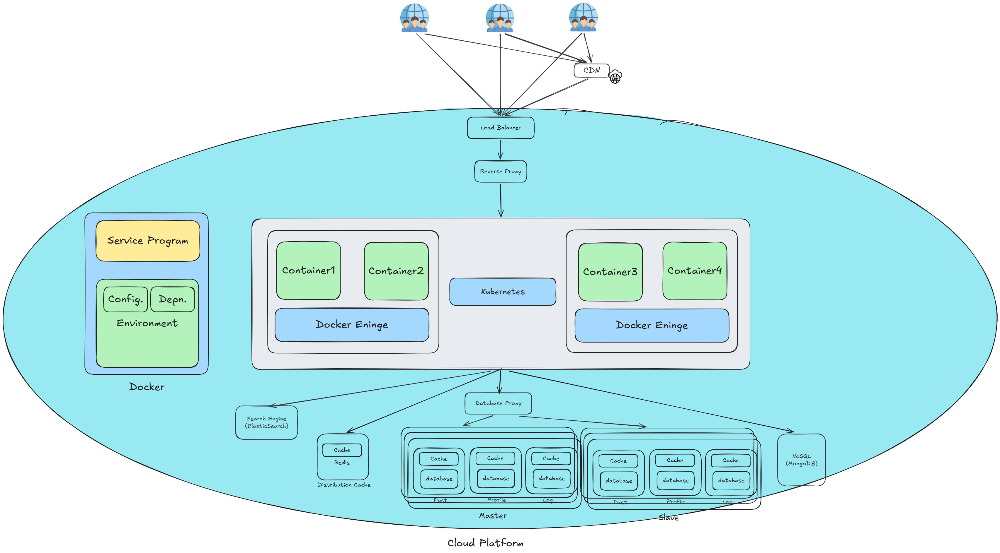
系統設計原則
Sean Goedecke 是 GitHub 的 Staff Software Engineer，擁有哲學背景的澳洲軟體工程師，目前在 GitHub 負責 AI 產品開發。他是 2025 年 Hacker News 上最受歡迎的部落客之一，發表了 141 篇文章，每月讀者超過百萬人。
這篇文章是他試圖把自己所有關於好的系統設計的知識整理成文字。他開頭就說市面上充斥著很多爛的系統設計建議。
他的核心主張是：
What is system design? In my view, if software design is how you assemble lines of code, system design is how you assemble services. — Sean Goedecke
好的系統設計不是聰明的技巧，而是知道如何在對的地方使用無聊但經過驗證的組件。
來源：seangoedecke.com/good-system-design
他最後用一句話總結：好的系統設計就像好的水管工程，「如果你在做太刺激的事，你大概會搞得一身糞。」
-
識別好的系統設計
- 好的系統設計應該從簡單的架構開始發展，而非一開始就使用複雜的架構與技術
- 好設計會讓人覺得「比想像中容易」、「幾乎不用擔心」。
-
狀態管理
- 儘量減少有狀態元件，集中管理狀態，因為最難維護也最容易出錯。
- 寫入邏輯最好集中在單一服務，避免多個服務直接操作同一張資料表。
- 讀邏輯雖然較彈性，但集中管理仍然比較乾淨。
-
資料庫設計
-
Schema 與 Index
- Schema 要直觀可讀，同時能隨業務演進。
- 索引要針對常見查詢設計，避免過度索引影響寫入效能。
-
瓶頸與最佳化
- 資料庫往往是流量瓶頸。
- 使用 JOIN 通常比多次查詢有效率，但在特定情境下可考慮拆查詢。
- 使用讀取副本（read replicas）分擔查詢負載，但要注意延遲。
- 大量寫入或突發流量需考慮限流或緩衝機制。
-
Schema 與 Index
-
快與慢的分離
- 使用者請求應保持快速，耗時工作應丟到背景處理。
- 背景工作透過隊列（queue + worker）執行，週期性工作可透過排程完成。
- 長時間延遲的任務（例如一個月後）應存放在資料庫，由排程定期檢查。
-
快取
- 對多用戶共用或重複計算的結果，應使用快取降低延遲與成本。
- 適合應用在 API 查詢或高頻計算的情境。
系統設計步驟
系統設計大致步驟可分為以下：
- 問題定義（Problem Definition）：確定要解決的核心問題。明確界定系統的目標與邊界（scope）。
-
需求分析（Requirement Analysis）：
- 功能性需求（Functional Requirements）：系統必須提供的功能，例如「用戶可以註冊/登入」、「系統能處理 10,000 筆交易」。
- 非功能性需求（Non-Functional Requirements）：系統的品質屬性，例如效能（latency）、可用性（availability）、安全性（security）、可維護性（maintainability）。
- 高階設計（High-level Design）：繪製系統架構圖（Architecture Diagram）。定義主要模組、子系統及其互動方式。決定技術棧（tech stack）。
-
詳細設計（Low-level Design / Detailed Design）：
- 設計資料庫（ERD、Schema）。
- 設計 API 介面。
- 設計類別（Class Diagrams）與流程（Sequence Diagrams）。
- 規劃模組內部邏輯。
- 原型/概念驗證（Prototype / Proof of Concept）：驗證關鍵功能或技術可行性。測試需求是否正確、技術風險是否可控。
- 實作（Implementation）：根據詳細設計開發程式。遵循編碼規範、版本控制與 CI/CD 流程。
- 測試（Testing）：執行單元測試（Unit Test）、整合測試（Integration Test）、壓力測試（Load Test）、安全測試（Security Test）。確保功能符合需求且系統穩定。
- 部署（Deployment）：部署至測試環境、預備環境、正式環境。使用自動化部署工具（CI/CD Pipeline）。
- 維運（Operation & Maintenance）：進行系統監控（Monitoring）。收集與分析 Log。持續修正 bug、改善效能、擴充功能。
- 回饋與迭代（Feedback & Iteration）：收集用戶回饋。依需求變更與新挑戰持續改版。
總結
系統架構其設計上的演進本質上是一場以問題為驅動的持續優化，每一個階段的解法都是為了解決上一個階段的瓶頸，同時也會帶來一些新的挑戰。
從最初的單機架構出發，隨著用戶量與業務複雜度的增長，系統依序經歷了：
- 資源分離：應用與資料庫分開部署，解決資源競爭
- 水平擴展：Load Balancer + 多台伺服器，解決單機應用瓶頸
- 緩存層：引入本地與分布式緩存，大幅降低資料庫讀取壓力
- 資料庫讀寫分離 → 分庫：逐步解決資料庫的讀寫與業務競爭瓶頸
- CDN + Reverse Proxy：提升靜態資源效能、強化安全性與流量管控
- NoSQL + 搜尋引擎：針對複雜查詢場景引入專用儲存系統
- 分布式架構 → RPC & Service Discovery：拆分單體應用，解決服務間通訊與動態感知問題
- Message Queue：實現非同步解耦與削峰填谷
- 微服務架構：服務更細粒度拆分，實現獨立部署與故障隔離
- 容器化 + 雲端平台：解決環境一致性、自動調度與資源彈性問題
沒有一種架構是完全正確且適用所有場景的，架構的選擇要與當前的業務規模、團隊能力和成本相匹配，過度設計與設計不足都會帶來問題。好的架構不是追求最複雜的系統，而是在對的時機做出對的取捨。
參考來源
- System Design Primer - GitHub — 最知名的系統設計學習資源，英文
- ByteByteGo Newsletter — 系統設計圖解，與本文風格接近
- InfoQ 架構專欄 — 中文，有大量分布式架構實戰文章
- AWS 架構白皮書 — 雲端平台章節的參考
- Nginx 官方文檔 — Reverse Proxy 章節的參考
- Kubernetes 官方文檔 — 容器化章節的參考
- ElasticSearch 官方文檔 — NoSQL/搜尋引擎章節的參考